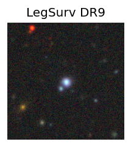
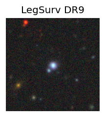
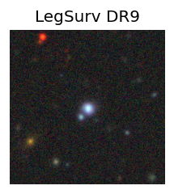

Candidate List 20250723 Previous Day Next Day Section 1: New Sources (age<1d) Cosmological Afterglow
Section 2: Old (1-5d) sources observed last night placeholder
Section 1: New Afterglow/FBOT Cands Last Night (2)
1. ZTF25abdebcc (Afterglow?) [Back to Top] [Share] [Trigger Swift] [Fritz ] [Lasair ]RA, Dec: 288.85954, -13.54183 19h15m26.29s, -13d-32m-30.60sGalactic (l, b): 23.41708, -11.37414 ext(g-r) = 0.241PS1: 1 source in 3 arcsec Closest: d = 0.20 arcsec photoz=0.08+/-0.04 peak abs mag = -19.46 Consistent with synchrotron, g-r>0!
2. ZTF25abdepqn (Afterglow?) [Back to Top] [Share] [Trigger Swift] [Fritz ] [Lasair ]RA, Dec: 306.68923, 56.20414 20h26m45.42s, 56d12m14.90sGalactic (l, b): 91.78984, 10.30723 ext(g-r) = 0.385 Consistent with synchrotron, g-r>0!
Section 2: Older Sources Observed Last Night (13)
0. ZTF25abbokdy (Afterglow?) [Back to Top] [Share] [Trigger Swift] [Fritz ] [Lasair ]RA, Dec: 320.05942, -21.26576 21h20m14.26s, -21d-15m-56.72sGalactic (l, b): 27.86021, -41.82278 ext(g-r) = 0.056PS1: 1 source in 3 arcsec Closest: d = 2.01 arcsec photoz=0.07+/-0.01 peak abs mag = -18.65
1. ZTF25abbzswx (Afterglow?) [Back to Top] [Share] [Trigger Swift] [Fritz ] [Lasair ]RA, Dec: 0.36646, 7.77647 0h 1m27.95s, 7d46m35.28sGalactic (l, b): 102.04002, -53.05623 ext(g-r) = 0.06 peak abs mag = -19.03 LegacySurvey: 1 sources in 3 arcsec Closest: d = 0.92 arcsec, 207.8 deg (east of north) photoz=0.09 (68% bounds 0.04, 0.1), type=REX peak abs mag = -19.14 (68% bounds -17.36, -19.58) Consistent with synchrotron, g-r>0!
2. ZTF25abckwuq (FBOT?) [Back to Top] [Share] [Trigger Swift] [Fritz ] [Lasair ]RA, Dec: 277.62651, 26.83102 18h30m30.36s, 26d49m51.66sGalactic (l, b): 55.23988, 16.15556 ext(g-r) = 0.105PS1: 1 source in 3 arcsec Closest: d = 2.54 arcsec photoz=0.15+/-0.03 peak abs mag = -20.25
3. ZTF25abcngap (FBOT?) [Back to Top] [Share] [Trigger Swift] [Fritz ] [Lasair ]RA, Dec: 322.81171, 19.56972 21h31m14.81s, 19d34m10.99sGalactic (l, b): 71.40558, -22.69081 ext(g-r) = 0.091peak abs mag = -20.37 LegacySurvey: 1 sources in 3 arcsec Closest: d = 1.76 arcsec, 54.1 deg (east of north) photoz=0.14 (68% bounds 0.1, 0.18), type=REX peak abs mag = -19.03 (68% bounds -18.28, -19.6)
4. ZTF25abcpffq (FBOT?) [Back to Top] [Share] [Trigger Swift] [Fritz ] [Lasair ]RA, Dec: 338.19836, -12.26099 22h32m47.61s, -12d-15m-39.57sGalactic (l, b): 50.64511, -54.30943 ext(g-r) = 0.065LegacySurvey: 1 sources in 3 arcsec Closest: d = 0.74 arcsec, 168.2 deg (east of north) photoz=0.2 (68% bounds 0.18, 0.22), type=SER peak abs mag = -19.76 (68% bounds -19.55, -20.0) Consistent with synchrotron, g-r>0!
5. ZTF25abcpjtf (FBOT?) [Back to Top] [Share] [Trigger Swift] [Fritz ] [Lasair ]RA, Dec: 3.90652, 21.89059 0h15m37.56s, 21d53m26.13sGalactic (l, b): 112.03048, -40.22189 ext(g-r) = 0.048peak abs mag = -18.97 LegacySurvey: 1 sources in 3 arcsec Closest: d = 1.20 arcsec, 213.4 deg (east of north) photoz=0.22 (68% bounds 0.19, 0.27), type=REX peak abs mag = -20.51 (68% bounds -20.12, -21.04)
6. ZTF25abcxtvx (Afterglow?) [Back to Top] [Share] [Trigger Swift] [Fritz ] [Lasair ]RA, Dec: 306.60275, -11.16922 20h26m24.66s, -11d-10m-9.20sGalactic (l, b): 33.42461, -26.09649 ext(g-r) = 0.055PS1: 1 source in 3 arcsec Closest: d = 6.45 arcsec photoz=0.71+/-0.11 peak abs mag = -23.26 Consistent with synchrotron, g-r>0!
7. ZTF25abczmes (FBOT?) [Back to Top] [Share] [Trigger Swift] [Fritz ] [Lasair ]RA, Dec: 356.91719, -6.09216 23h47m40.13s, -6d-5m-31.77sGalactic (l, b): 84.28195, -64.06854 ext(g-r) = 0.031peak abs mag = -19.87 LegacySurvey: 1 sources in 3 arcsec Closest: d = 0.80 arcsec, 144.2 deg (east of north) photoz=0.07 (68% bounds 0.06, 0.08), type=SER peak abs mag = -18.38 (68% bounds -18.06, -18.64) Consistent with synchrotron, g-r>0!
8. ZTF25abdbsmd (FBOT?) [Back to Top] [Share] [Trigger Swift] [Fritz ] [Lasair ]RA, Dec: 11.93589, 3.23875 0h47m44.61s, 3d14m19.49sGalactic (l, b): 121.10838, -59.61992 ext(g-r) = 0.022peak abs mag = -18.44 LegacySurvey: 1 sources in 3 arcsec Closest: d = 1.70 arcsec, 230.0 deg (east of north) photoz=0.35 (68% bounds 0.15, 0.45), type=SER peak abs mag = -21.27 (68% bounds -19.15, -21.93) Consistent with synchrotron, g-r>0!
9. ZTF25abddxfa (FBOT?) [Back to Top] [Share] [Trigger Swift] [Fritz ] [Lasair ]RA, Dec: 266.33665, 6.63819 17h45m20.80s, 6d38m17.47sGalactic (l, b): 31.37222, 17.70552 ext(g-r) = 0.227peak abs mag = -19.97 PS1: 1 source in 3 arcsec Closest: d = 2.42 arcsec photoz=0.10+/-0.01 peak abs mag = -19.39
10. ZTF25abdfamy (FBOT?) [Back to Top] [Share] [Trigger Swift] [Fritz ] [Lasair ]RA, Dec: 5.91875, 24.9038 0h23m40.50s, 24d54m13.69sGalactic (l, b): 114.9866, -37.53926 ext(g-r) = 0.039peak abs mag = -21.55 LegacySurvey: 1 sources in 3 arcsec Closest: d = 1.16 arcsec, 295.2 deg (east of north) photoz=0.09 (68% bounds 0.07, 0.14), type=REX peak abs mag = -18.12 (68% bounds -17.44, -19.14)
11. ZTF25abdfqhm (Afterglow?) [Back to Top] [Share] [Trigger Swift] [Fritz ] [Lasair ]RA, Dec: 305.25213, -16.45493 20h21m0.51s, -16d-27m-17.74sGalactic (l, b): 27.42401, -27.02111 ext(g-r) = 0.084PS1: 1 source in 3 arcsec Closest: d = 2.52 arcsec photoz=0.78+/-0.08 peak abs mag = -24.61
12. ZTF25abdhyhr (Afterglow?) [Back to Top] [Share] [Trigger Swift] [Fritz ] [Lasair ]RA, Dec: 332.187, -27.85358 22h 8m44.88s, -27d-51m-12.90sGalactic (l, b): 22.12031, -54.08103 ext(g-r) = 0.021 Consistent with synchrotron, g-r>0! 


 
